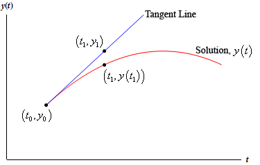
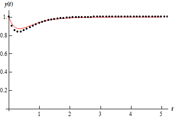
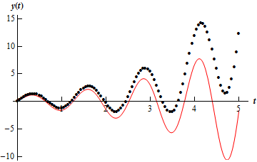

Up to this point practically every differential equation
that we’ve been presented with could be solved.
The problem with this is that these are the exceptions rather than the
rule. The vast majority of first order
differential equations can’t be solved.
In order to teach you something about solving first order
differential equations we’ve had to restrict ourselves down to the fairly
restrictive cases of linear, separable, or exact differential equations or differential
equations that could be solved with a set of very specific substitutions. Most first order differential equations
however fall into none of these categories.
In fact even those that are separable or exact cannot always be solved
for an explicit solution. Without
explicit solutions to these it would be hard to get any information about the
solution.
So what do we do when faced with a differential equation
that we can’t solve? The answer depends
on what you are looking for. If you are
only looking for long term behavior of a solution you can always sketch a
direction field. This can be done
without too much difficulty for some fairly complex differential equations that
we can’t solve to get exact solutions.
The problem with this approach is that it’s only really good
for getting general trends in solutions and for long term behavior of
solutions. There are times when we will
need something more. For instance, maybe
we need to determine how a specific solution behaves, including some values
that the solution will take. There are
also a fairly large set of differential equations that are not easy to sketch
good direction fields for.
In these cases we resort to numerical methods that will
allow us to approximate solutions to differential equations. There are many different methods that can be
used to approximate solutions to a differential equation and in fact whole
classes can be taught just dealing with the various methods. We are going to look at one of the oldest and
easiest to use here. This method was
originally devised by Euler and is called, oddly enough, Euler’s Method.
Let’s start with a general first order IVP
where f(t,y) is a
known function and the values in the initial condition are also known
numbers. From the second theorem in the Intervals of Validity section we know that if f and fy are continuous functions then there is a unique solution
to the IVP in some interval surrounding  . So, let’s assume that everything is nice and
continuous so that we know that a solution will in fact exist.
. So, let’s assume that everything is nice and
continuous so that we know that a solution will in fact exist.
We want to approximate the solution to (1)
near . We’ll start with the two pieces of
information that we do know about the solution.
First, we know the value of the solution at from the initial condition. Second, we also know the value of the
derivative at . We can get this by plugging the initial
condition into f(t,y) into the
differential equation itself. So, the
derivative at this point is.
Now, recall from your Calculus I class that these two pieces
of information are enough for us to write down the equation of the tangent line
to the solution at . The tangent line is
Take a look at the figure below

If t1
is close enough to t0 then
the point y1 on the
tangent line should be fairly close to the actual value of the solution at t1, or y(t1). Finding y1 is easy enough. All we
need to do is plug t1 in
the equation for the tangent line.
Now, we would like to proceed in a similar manner, but we
don’t have the value of the solution at t1
and so we won’t know the slope of the tangent line to the solution at this
point. This is a problem. We can partially solve it however, by
recalling that y1 is an
approximation to the solution at t1. If y1
is a very good approximation to the actual value of the solution then we can use
that to estimate the slope of the tangent line at t1.
So, let’s hope that y1
is a good approximation to the solution and construct a line through the point
(t1, y1) that has slope f
(t1, y1). This gives
Now, to get an approximation to the solution at t = t2
we will hope that this new line will be fairly close to the actual solution at t2 and use the value of the
line at t2 as an
approximation to the actual solution.
This gives.
We can continue in this fashion. Use the previously computed approximation to
get the next approximation. So,
In general, if we have tn
and the approximation to the solution at this point, yn, and we want to find the approximation at tn+1 all we need to do is use
the following.
If we define we can simplify the formula to
Often, we will assume that the step sizes between the points
t0 , t1 , t2
, … are of a uniform size of h. In other words, we will often assume that
This doesn’t have to be done and there are times when it’s
best that we not do this. However, if we
do the formula for the next approximation becomes.
So, how do we use Euler’s Method? It’s fairly simple. We start with (1) and
then decide if we want to use a uniform step size or not. Then starting with (t0, y0)
we repeatedly evaluate (2) or (3)
depending on whether we chose to use a uniform set size or not. We continue until we’ve gone the desired
number of steps or reached the desired time.
This will give us a sequence of numbers y1 , y2
, y3 , … yn that will approximate the value of the actual
solution at t1 , t2 , t3 , … tn.
What do we do if we want a value of the solution at some other
point than those used here? One
possibility is to go back and redefine our set of points to a new set that will
include the points we are after and redo Euler’s Method using this new set of
points. However this is cumbersome and
could take a lot of time especially if we had to make changes to the set of
points more than once.
Another possibility is to remember how we arrived at the
approximations in the first place.
Recall that we used the tangent line
to get the value of y1. We could use this tangent line as an
approximation for the solution on the interval [t0, t1]. Likewise, we used the tangent line
to get the value of y2. We could use this tangent line as an
approximation for the solution on the interval [t1, t2]. Continuing in this manner we would get a set
of lines that, when strung together, should be an approximation to the solution
as a whole.
In practice you would need to write a computer program to do
these computations for you. In most cases the function f(t,y)
would be too large and/or complicated to use by hand and in most serious uses
of Euler’s Method you would want to use hundreds of steps which would make
doing this by hand prohibitive. So, here is a bit of pseudo-code
that you can use to write a program for Euler’s Method that uses a uniform step
size, h.
- define .
- input t0 and y0.
- input step size, h
and the number of steps, n.
- for j from 1 to n do
- m = f (t0, y0)
- y1 = y0
+ h*m
- t1 = t0
+ h
- Print t1 and y1
- t0 = t1
- y0 = y1
- end
The pseudo-code for a non-uniform step size would be
a little more complicated, but it would essentially be the same.
So, let’s take a look at a couple of examples. We’ll use Euler’s Method to approximate
solutions to a couple of first order differential equations. The differential equations that we’ll be
using are linear first order differential equations that can be easily solved
for an exact solution. Of course, in
practice we wouldn’t use Euler’s Method on these kinds of differential
equations, but by using easily solvable differential equations we will be able
to check the accuracy of the method.
Knowing the accuracy of any approximation method is a good thing. It is important to know if the method is
liable to give a good approximation or not.
|
Example 1 For
the IVP
Use Euler’s Method with a step size of h = 0.1 to find approximate values of
the solution at t = 0.1, 0.2, 0.3,
0.4, and 0.5. Compare them to the
exact values of the solution as these points.
Solution
This is a fairly simple linear differential equation so
we’ll leave it to you to check that the solution is
In order to use Euler’s Method we first need to rewrite
the differential equation into the form given in (1).
From this we can see that . Also note that t0 = 0 and y0
= 1. We can now start doing some
computations.
So, the approximation to the solution at t1 = 0.1 is y1 = 0.9.
At the next step we have
Therefore, the approximation to the solution at t2 = 0.2 is y2 = 0.852967995.
I’ll leave it to you to check the remainder of these computations.
Here’s a quick table that gives the approximations as well
as the exact value of the solutions at the given points.
|
Time, tn
|
Approximation
|
Exact
|
Error
|
|
t0 = 0
|
y0 =1
|
y(0) = 1
|
0 %
|
|
t1 = 0.1
|
y1 =0.9
|
y(0.1) = 0.925794646
|
2.79 %
|
|
t2 = 0.2
|
y2 =0.852967995
|
y(0.2) = 0.889504459
|
4.11 %
|
|
t3 = 0.3
|
y3 =0.837441500
|
y(0.3) = 0.876191288
|
4.42 %
|
|
t4 = 0.4
|
y4 =0.839833779
|
y(0.4) = 0.876283777
|
4.16 %
|
|
t5 = 0.5
|
y5 =0.851677371
|
y(0.5) = 0.883727921
|
3.63 %
|
We’ve also included the error as a percentage. It’s often easier to see how well an
approximation does if you look at percentages. The formula for this is,
We used absolute value in the numerator because we really
don’t care at this point if the approximation is larger or smaller than the
exact. We’re only interested in how
close the two are.
|


The maximum error in the approximations from the last
example was 4.42%, which isn’t too bad, but also isn’t all that great of an
approximation. So, provided we aren’t
after very accurate approximations this didn’t do too badly. This kind of error is generally unacceptable
in almost all real applications however.
So, how can we get better approximations?
Recall that we are getting the approximations by using a
tangent line to approximate the value of the solution and that we are moving
forward in time by steps of h. So, if we want a more accurate
approximation, then it seems like one way to get a better approximation is to
not move forward as much with each step.
In other words, take smaller h’s.
|
Example 2 Repeat
the previous example only this time give the approximations at t = 1, t
= 2, t = 3, t = 4, and t
= 5. Use h
= 0.1, h = 0.05, h = 0.01, h = 0.005, and h =
0.001 for the approximations.
Solution
Below are two tables, one gives approximations to the
solution and the other gives the errors for each approximation. We’ll leave the computational details to
you to check.
|
Approximations
|
|
Time
|
Exact
|
h
= 0.1
|
h
= 0.05
|
h
= 0.01
|
h
= 0.005
|
h
= 0.001
|
|
t = 1
|
0.9414902
|
0.9313244
|
0.9364698
|
0.9404994
|
0.9409957
|
0.9413914
|
|
t = 2
|
0.9910099
|
0.9913681
|
0.9911126
|
0.9910193
|
0.9910139
|
0.9910106
|
|
t = 3
|
0.9987637
|
0.9990501
|
0.9988982
|
0.9987890
|
0.9987763
|
0.9987662
|
|
t = 4
|
0.9998323
|
0.9998976
|
0.9998657
|
0.9998390
|
0.9998357
|
0.9998330
|
|
t = 5
|
0.9999773
|
0.9999890
|
0.9999837
|
0.9999786
|
0.9999780
|
0.9999774
|
|
Percentage Errors
|
|
Time
|
h
= 0.1
|
h
= 0.05
|
h
= 0.01
|
h
= 0.005
|
h
= 0.001
|
|
t = 1
|
1.08 %
|
0.53 %
|
0.105 %
|
0.053 %
|
0.0105 %
|
|
t = 2
|
0.036 %
|
0.010 %
|
0.00094 %
|
0.00041 %
|
0.0000703 %
|
|
t = 3
|
0.029 %
|
0.013 %
|
0.0025 %
|
0.0013 %
|
0.00025 %
|
|
t = 4
|
0.0065 %
|
0.0033 %
|
0.00067 %
|
0.00034 %
|
0.000067 %
|
|
t = 5
|
0.0012 %
|
0.00064 %
|
0.00013 %
|
0.000068 %
|
0.000014 %
|
We can see from these tables that decreasing h does in fact improve the accuracy of
the approximation as we expected.
|
There are a couple of other interesting things to note from
the data. First, notice that in general,
decreasing the step size, h, by a
factor of 10 also decreased the error by about a factor of 10 as well.
Also, notice that as t
increases the approximation actually tends to get better. This isn’t the case completely as we can see
that in all but the first case the t
= 3 error is worse than the error at t
= 2, but after that point, it only gets better.
This should not be expected in general.
In this case this is more a function of the shape of the solution. Below is a graph of the solution (the line)
as well as the approximations (the dots) for h = 0.1.

Notice that the approximation is worst where the function is
changing rapidly. This should not be too
surprising. Recall that we’re using
tangent lines to get the approximations and so the value of the tangent line at
a given t will often be significantly
different than the function due to the rapidly changing function at that point.
Also, in this case, because the function ends up fairly flat
as t increases, the tangents start
looking like the function itself and so the approximations are very
accurate. This won’t always be the case
of course.
Let’s take a look at one more example.
|
Example 3 For
the IVP
Use Euler’s Method to find the approximation to the
solution at t = 1, t
= 2, t = 3, t = 4, and t
= 5. Use h
= 0.1, h = 0.05, h = 0.01, h = 0.005, and h =
0.001 for the approximations.
Solution
I’ll leave it to you to check the details of the solution
process. The solution to this linear
first order differential equation is.
Here are two tables giving the approximations and the
percentage error for each approximation.
|
Approximations
|
|
Time
|
Exact
|
h
= 0.1
|
h
= 0.05
|
h
= 0.01
|
h
= 0.005
|
h
= 0.001
|
|
t = 1
|
-1.58100
|
-0.97167
|
-1.26512
|
-1.51580
|
-1.54826
|
-1.57443
|
|
t = 2
|
-1.47880
|
0.65270
|
-0.34327
|
-2.18657
|
-1.35810
|
-1.45453
|
|
t = 3
|
2.91439
|
7.30209
|
5.34682
|
3.44488
|
3.18259
|
2.96851
|
|
t = 4
|
6.74580
|
15.56128
|
11.84839
|
7.89808
|
7.33093
|
6.86429
|
|
t = 5
|
-1.61237
|
21.95465
|
12.24018
|
1.56056
|
0.0018864
|
-1.28498
|
|
Percentage Errors
|
|
Time
|
h
= 0.1
|
h
= 0.05
|
h
= 0.01
|
h
= 0.005
|
h
= 0.001
|
|
t = 1
|
38.54 %
|
19.98 %
|
4.12 %
|
2.07 %
|
0.42 %
|
|
t = 2
|
144.14 %
|
76.79 %
|
16.21 %
|
8.16 %
|
1.64 %
|
|
t = 3
|
150.55 %
|
83.46 %
|
18.20 %
|
9.20 %
|
1.86 %
|
|
t = 4
|
130.68 %
|
75.64 %
|
17.08 %
|
8.67 %
|
1.76 %
|
|
t = 5
|
1461.63 %
|
859.14 %
|
196.79 %
|
100.12 %
|
20.30 %
|
So, with this example Euler’s Method does not do nearly as
well as it did on the first IVP. Some
of the observations we made in Example 2 are still true however. Decreasing the size of h decreases the error as we saw with the last example and would
expect to happen. Also, as we saw in
the last example, decreasing h by a
factor of 10 also decreases the error by about a factor of 10.
However, unlike the last example increasing t sees an increasing error. This behavior is fairly common in the
approximations. We shouldn’t expect
the error to decrease as t
increases as we saw in the last example.
Each successive approximation is found using a previous
approximation. Therefore, at each step
we introduce error and so approximations should, in general, get worse as t increases.
Below is a graph of the solution (the line) as well as the
approximations (the dots) for h =
0.05.

As we can see the approximations do follow the general
shape of the solution, however, the error is clearly getting much worse as t increases.
|
So, Euler’s method is a nice method for approximating fairly
nice solutions that don’t change rapidly.
However, not all solutions will be this nicely behaved. There are other approximation methods that do
a much better job of approximating solutions.
These are not the focus of this course however, so I’ll leave it to you
to look further into this field if you are interested.
Also notice that we don’t generally have the actual solution
around to check the accuracy of the approximation. We generally try to find bounds on the error
for each method that will tell us how well an approximation should do. These error bounds are again not really the
focus of this course, so I’ll leave these to you as well if you’re interested
in looking into them.